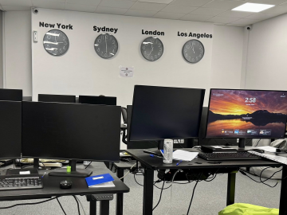

Officers of the Cybercrime Directorate at GDCOC conducted a specialised operation against a criminal group that carried out investment fraud against foreign nationals from a call centre in Sofia advertised as a reliable investment intermediary.
The police action was carried out on 4 June 2026 under the supervision of the Sofia City Prosecutor’s Office.
Pre-trial proceedings have been opened for crimes under Articles 212a and 321 of the Criminal Code — computer fraud and deceiving citizens for the purpose of obtaining a benefit.
Evidence has been gathered that the operation was aimed at persuading people to invest funds against promises of high returns and growing income, which not only failed to materialise within the promised period — the platform’s clients could not even recover their initial investments.
Five people — Bulgarian and foreign nationals — were detained by the cyber police under the Ministry of the Interior Act.
Searches were carried out at the administrative building and two further private addresses, from which numerous computer systems, mobile devices, documents and items relevant to the investigation were seized.